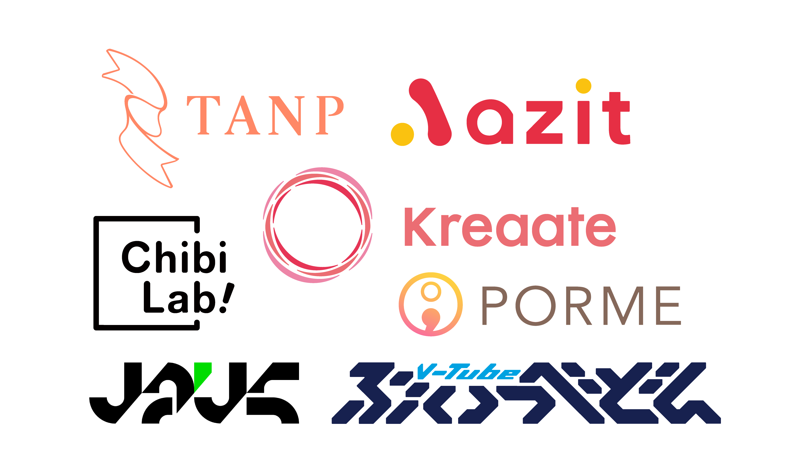

はじめまして！
この度は採用選考に進まさせていただき、本当にありがとうございます。ポートフォリオサイトではあまりにもプロフィールが少ないので、かんたんに経歴と意気込みを綴ろうと思います。
千葉県に育ち、4歳上の兄がいます。ハーフです。
兄とおなじ習い事をすることが多く、覚えているのは４歳ごろからでしょうか、空手とエレクトーンをならっていました。どちらも中学の留学を機に引退しました。
留学先はシンガポール。祖母の実家に居候するといった形で日本人学校に通い始めます。このころから自分がクラスで馴染めてないなと感じるも、現地の友人と遊んだり、油絵やデッサンの教室に通っていました。好きな料理はチキンライスです。
2年間の留学生活はおわり中3からまた千葉の地元へ帰ってきます。それなりの成績でそれなりの高校へ入学してから、そこで恩師の数学教師と出会います。もともと数学に苦手意識はなく、みるみる先生の実験的な授業に引き込まれては、よく職員室に足を運ぶようになっていました。
在学3年間を通して科学系課題研究に取り組むカリキュラムがあったので、迷わず数学を選びました。研究名は「魔方陣・五芒陣の性質の検討と小星型十二面体への拡張の研究」です。内容はさておき、毎日毎日寝ても覚めても、ずーーっと思考実験の繰り返し。2年半で書き溜めたメモは2000枚に達し、ひたすら一つを突き詰め、考え抜いた３年間でした。同時にサイエンス部部長をつとめました。
↑海外研修で用いたプレゼン資料(いまみたらいろいろ酷い)
理学部数学科へ入学しました。正直このまま教授職につくんだろうなとか思ってましが、一瞬で挫折しました。より深く数学に埋もれた人を目にしたからです。学問としての数学はいまも変わらず好きです。
ある日の夏休みのこと。サークルもなくアルバイトもなく、ただただベッドで過ごす1日がありました。そのときとてつもない虚無感に襲われ急に不安と焦りがでてきました。「何かしたい、何かやらなきゃ...でも他人と同じことはしたくない...(天邪鬼)」
そこで通い始めたのが学生起業を応援するビジネススクールWILLFUです。起業って響きいいじゃん、自分で稼げるようになるし。Amazonの日米の価格差を利用してせどりをしたり、三が日は浅草でチェキ撮影販売したり、、、。23区を駆け巡った半年でした。
でも、なにかがちがう、、、自分で、チームで事業を回して思ったのは "社会の隙間をつついている感覚" でした。課題というアナを見つけてはそれを埋めること。そのときぼくが欲していたのは、じつは "100%じぶんクオリティ" だったのがわかったのでした。これは自分に自信がなかったから。made by 俺！と自慢できる何かが欲しかった。
そこではじめたのが、同人音楽プロデュースです。同人の世界でも有名無名の格差が激しくなっており、新米アーティストは作っても聞いてもらえすらしない。なら一度でも有名アーティストとコラボできたら、新しい境地に引き上げられるのでは？と思い、スプリットアルバムを制作しました。知名度を有名人で担保したこともあり、初回にして100枚ほど販売できました。アーティストさんに直接連絡をとり、ロゴはクラウドソーシングで、コンセプト・ジャケットデザイン・発注・コミケ出展...。妄想した世界観がかたちになったときは、数値を追いかけたゴールとは違う達成感を感じました。
そうもこうも、CDは1000枚も刷ってしまったし大赤字。結局アルバイトしてしのぐ日々。この頃からCMにはまり始めました。「あぁ、30秒と短い中でなぜこんなにも心にぐっとくるのだろうか...」と。コピーライティングの著書を読み漁っては、某広告代理店でSEOやSNS広告運用のアルバイトをしてみました。その数字を見てはA/Bしたり、文言を変えたり、ターゲットを変えたり、予算配分を再分配したり、レポートを出す日々。
やっぱりなんかちがう...。やっぱりモノそのものを作りたいんだ。
ドライブシェアアプリCREWを運営しているAzitに前職の経験を生かしてマーケター兼ゼロからデザイナーとしてインターンを始めました。このときはじめて Material Design Guidelines や Human Interface Guidelines を読んで、「デザインってセンスじゃないんだ！」「説明できる！理由がある！」と目を輝かせながら読んでいた記憶があります。
デザインだけじゃない。簡単なコードなら自分でも書けるじゃん！jsって楽しいじゃん！
でも圧倒的に足りてないものがありました。作ったものに対する適切なフィードバックが得られる環境です。なんとなく悪い。もっといいものが絶対ある...。そんなモヤモヤを解消したい。だったらちゃんとしたデザインを勉強しに行こう。
そうおもって、思い切って大学を中退し、専門学校へ入学しました。
専門に移ったことで、制作やインプットにかけられる時間が圧倒的に増えました。そしてAzitのコーポレートロゴをつくる機会をいただいたことで、ロゴデザインプロセスを独学ながら学んでいきました。
ただ思ってたのと違ったのは、専門学校では学問的な確固たる(造形力とよべる)デザインのフィードバックが得られるわけではなかったことです。
そんなぼくが学費を稼ぐべく最短でバリューを出すには、スタートアップで経営者の思い(philosophy)を鮮明にしロゴを作り、その世界観を迅速にUIに落とし込むことでした。なので力配分は99%の作文能力とちょっとのデザイン力です。

ロゴデザインって、同業種じゃないかぎり全然批判されないんです。なんならほとんど見てくれてない。きっと自己満で終わってることがかなりの部分にあると思ってます。
なによりも、雰囲気はロゴだけじゃつたわらない。もっとUIやUXやグラフィックにも体系化しないと意味がない。
だから、一から、またひとつひとつ、着実にサービスを俯瞰できるように力をつけていきたいと思っています。